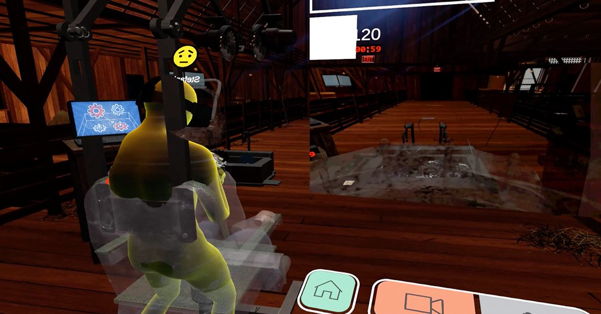
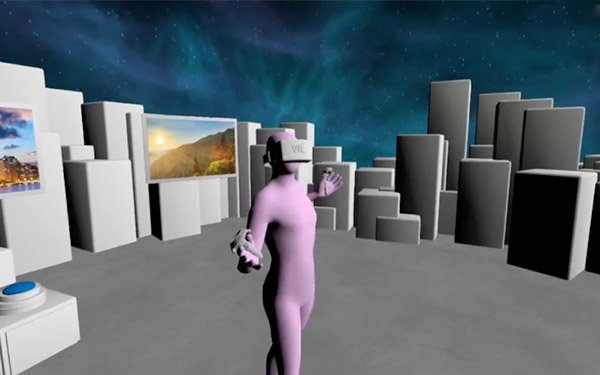

Isobar - VR Analytics - Desktop VR
 Aided in creating a mechanism to replay behavioral and emotional data captured during VR experiences, the platform enables stakeholders to actually “go into” the VR application and analyze areas that have stimulated an emotional reaction from the user. Multiple stakeholders can simultaneously view users’ avatars playing back inside the VR session as it was experienced. The avatar changes color based on the user's emotions, such as interest, happiness, and disappointment. This Application was used in partnership with Unity and the VR Advertisment for Jigsaw in 2017
Modeling, Rigging Shaders, UI Design and Scripting.
Featured around the web:
https://www.fastcompany.com/company/isobar